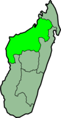

(carte)
Province de Majunga
Un article de Wikipédia, l'encyclopédie libre.
|
|
Cet article est une ébauche concernant Madagascar.
Vous pouvez partager vos connaissances en l’améliorant (comment ?) selon les recommandations des projets correspondants.
|
| Mahajanga | |
|  | |
|---|---|
| Administration | |
| Pays | Madagascar |
| Type | Province |
| Capitale | Mahajanga |
| Géographie | |
| Superficie | 150 023 km2 |
| Population | |
| Population | 2 224 570 hab. (2011) |
| Densité | 14,8 hab./km2 |
{kind=link}
Mahajanga est une province de Madagascar avec une superficie de 150 023 km2. Elle a une population de 2 224 570 habitants (2011). Sa capitale s’appelle Mahajanga.
Cette province est constituée de quatre régions :
Sommaire[masquer] |
Fivondronana (districts)[modifier]
- District d'Ambato-Boeny
- District d'Analalava
- District d'Antsalova
- District d'Antsohihy
- District de Bealanana
- District de Befandriana Avaratra (Befandriana Nord)
- District de Besalampy
- District de Boriziny (Port-Bergé)
- District de Kandreho
- District de Maevatanana
- District de Mahajanga I
- District de Mahajanga II
- District de Maintirano
- District de Mampikony
- District de Mandritsara
- District de Marovoay
- District de Mitsinjo
- District de Morafenobe
- District de Soalala
- District de Tsaratanana